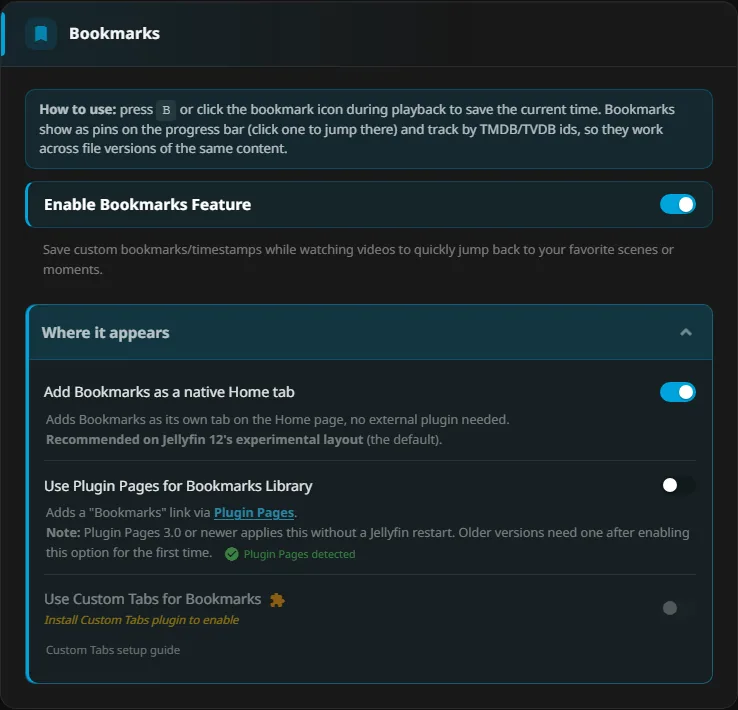
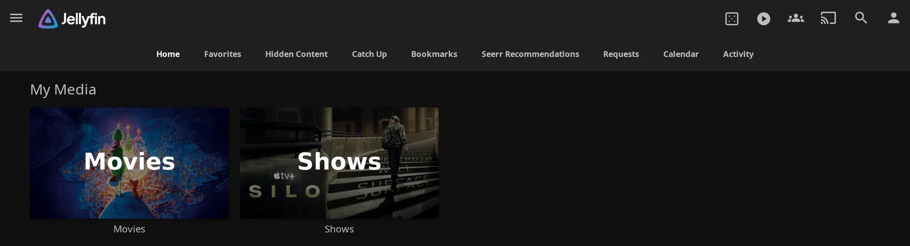

JE Pages & Tabs¶
JE adds seven pages for bookmarks, upcoming releases, requests, and more. Choose which ones to enable and where you want users to find them.
Choose a placement¶
Native Home tabs need no companion plugin and work on Jellyfin 12 and 10.11.
- Open admin Dashboard → Plugins → Jellyfin Enhanced → Pages.
- Enable the feature and its Add … as a native Home tab option.
- Click Save Settings and refresh the user's web client.
Other placements are listed below.
| Placement | Requires | How users reach it |
|---|---|---|
| JE standalone page | JE's injected web interface; available for Bookmarks, Hidden Content, Requests, Calendar, and Recommendations | JE's navigation drawer link where the layout exposes it, or the supported standalone route below. |
| Native Home tab | JE's injected web interface and that page's native-tab setting | The named Home tab. If the layout hides its button, use JE's fallback header shortcut-tray link. |
| Plugin Pages | Active Plugin Pages companion and that page's Plugin Pages setting | The companion's registered page entry. On Jellyfin 12's Modern Layout, sidebar entries are mobile navigation. |
| Custom Tabs | Active Custom Tabs companion, its prerequisites, that page's Custom Tabs setting, and a matching tab entry | The configured tab on Home. JE can create its entry automatically or you can add it manually. |
Choose one Home-tab mode per page
Native Home tabs and Custom Tabs can't be enabled together for the same page; selecting one deselects the other. JE's native tabs can coexist with unrelated Custom Tabs. Plugin Pages is a separate option and can be enabled alongside a native tab.
Modern Layout on Jellyfin 12
Desktop has no visible sidebar page links in this layout. JE's native tab button can also be hidden, so JE adds a header shortcut-tray fallback. On phones, use the drawer or Home/header links. The avatar-menu Jellyfin Enhanced entry opens personal settings; it isn't a replacement menu for every JE page.
All page-placement switches and Add the Custom Tabs entry for me start Off. Of these seven pages, only the Bookmarks feature starts On.


Activity and Catch Up need navigation
Activity and Catch Up have no JE standalone sidebar page. Enabling either feature without a tab or Plugin Pages doesn't create a navigable page.
Bookmarks¶
Save a moment while watching so you can return to the scene later. Your timestamps are saved per account on the server.
- During browser playback, press B with the default binding or use the bookmark button.
- Open Bookmarks to play, edit, or organize saved timestamps. You don't need a companion plugin to manage them.

Use Series for episode bookmarks; each episode has its own card.

For library maintenance, see Enhanced features.
Admin Pages → Bookmarks; every option and default is in Enhanced settings → Bookmarks.
Details
Without a selected tab or active Plugin Pages integration, the standalone library uses #/bookmarks.
Internal setting names:
| Setting | Property |
|---|---|
| Enable Bookmarks Feature | BookmarksEnabled |
| Add Bookmarks as a native Home tab | BookmarksUseNativeTab |
| Use Plugin Pages for Bookmarks Library | BookmarksUsePluginPages |
| Use Custom Tabs for Bookmarks | BookmarksUseCustomTabs |
| Add the Custom Tabs entry for me | BookmarksAutoCreateCustomTab |
Hidden Content¶
Keep titles or other supported items off selected surfaces, then review or unhide them in one place.
- Set your personal filters in the Enhanced panel's Hidden Content section.
- Hide items from the supported surfaces you use.
- Open Hidden Content to review or unhide them. Administrators can also manage other users' lists when Let admins view and manage other users' hidden content is on.
See content management and Enhanced settings.
Admin Pages → Hidden Content; every option and default is in Enhanced settings → Hidden Content administration.
Details
The standalone route is #/hidden-content. Disabling the server feature preserves saved hidden items. Hiding filters supported responses and web surfaces; it doesn't revoke library access.
Internal setting names:
| Setting | Property |
|---|---|
| Enable Hidden Content | HiddenContentEnabled |
| Add Hidden Content as a native Home tab | HiddenContentUseNativeTab |
| Use Plugin Pages for Hidden Content | HiddenContentUsePluginPages |
| Use Custom Tabs for Hidden Content | HiddenContentUseCustomTabs |
| Add the Custom Tabs entry for me | HiddenContentAutoCreateCustomTab |
| Let admins view and manage other users' hidden content | HiddenContentAdmin |
Requests and downloads¶
Requests brings together Seerr requests and issues with Sonarr/Radarr downloads and download history. Use it to check progress in one place. Scroll through the stacked Downloads, Requests, Issues, and History sections when their content is enabled and available.
- Configure Seerr for requests/issues, and enabled Sonarr/Radarr instances with API keys for downloads/history.
- Enable the page and choose its placement.
- Open Requests to inspect status. Your available actions depend on the linked Seerr user's permissions.
See *arr features, *arr settings, and Seerr permissions.
Admin Pages → Requests Page; every option and default is in Seerr settings → Requests Page Management.
Show Downloads in Requests Page, Show Seerr Issues Section, and Show Download History Section control the page's content separately.
Details
The standalone route is #/downloads. There isn't a separate JE Downloads page, even though internal properties and this route use that name.
Internal setting names:
| Setting | Property |
|---|---|
| Enable Requests Page | DownloadsPageEnabled |
| Add Requests as a native Home tab | DownloadsUseNativeTab |
| Use Plugin Pages for Requests | DownloadsUsePluginPages |
| Use Custom Tabs for Requests | DownloadsUseCustomTabs |
| Add the Custom Tabs entry for me | DownloadsAutoCreateCustomTab |
Calendar¶
Browse upcoming movies and episodes from your configured Sonarr, Radarr, or Shoko sources. Shoko can be your only source.
- Open Calendar and select a view and filters.
- Open an event to see its details.
See *arr features and *arr settings for source setup and access filters.
Admin Pages → Calendar Page; every option and default is in *arr settings → Calendar Page Settings.
Details
The standalone route is #/calendar. When Calendar detects its active Plugin Pages integration, its standalone page yields to that integration. Use the registered page entry rather than relying on the direct route.
Internal setting names:
| Setting | Property |
|---|---|
| Enable Calendar Page | CalendarPageEnabled |
| Add Calendar as a native Home tab | CalendarUseNativeTab |
| Use Plugin Pages | CalendarUsePluginPages |
| Use Custom Tabs | CalendarUseCustomTabs |
| Add the Custom Tabs entry for me | CalendarAutoCreateCustomTab |
Recommendations¶
Find something to watch in trending, popular, and upcoming feeds, or browse studios, networks, and genre tiles. This discovery page is separate from recommendations on an individual item's details.
- Open Seerr Recommendations from its standalone link or native Home tab, or Recommendations from Plugin Pages or a JE-managed Custom Tabs entry.
- Open a row or category to explore it.

Seerr is required
Enable and configure Seerr, and link your user. Studio-produced TV feeds also require TMDB API Key.
See Seerr features.
Admin Pages → Seerr Recommendations Page; every option and default is in Seerr settings → Seerr Recommendations Page.
Details
The standalone route is #/recommendations. Changing placement can't repair disabled integrations or missing upstream permissions.
Internal setting names:
| Setting | Property |
|---|---|
| Enable Recommendations Page | RecommendationsPageEnabled |
| Add Recommendations as a native Home tab | RecommendationsUseNativeTab |
| Use Plugin Pages | RecommendationsUsePluginPages |
| Use Custom Tabs | RecommendationsUseCustomTabs |
| Add the Custom Tabs entry for me | RecommendationsAutoCreateCustomTab |
Activity¶
See recent watched, favorited, and reviewed activity from people on your server. Library access and author-visibility rules control what you can see.
Open Activity from a configured tab or Plugin Pages entry. See Enhanced features and Enhanced settings.
Admin Pages → Activity Feed; every option and default is in Enhanced settings → Activity Feed.
Choose activity types in this admin section.
Active Streams needs data collection
Show Active Streams section also needs active-stream data collection enabled in Extras. This is independent of showing the header widget.
Details
Watched activity includes qualifying partial playback, as well as completions. JE provides no standalone #/activity route.
Internal setting names:
| Setting | Property |
|---|---|
| Enable Activity Feed | ActivityFeedEnabled |
| Add Activity as a native Home tab | ActivityFeedUseNativeTab |
| Use Plugin Pages | ActivityFeedUsePluginPages |
| Use Custom Tabs | ActivityFeedUseCustomTabs |
| Add the Custom Tabs entry for me | ActivityFeedAutoCreateCustomTab |
Catch Up¶
Work through unwatched titles as a card deck. You'll see only titles you can access.
- Open Catch Up from a configured tab or Plugin Pages entry.
- Use buttons or swipe gestures to mark a title watched, dismiss it, or add it to your watchlist.
See Enhanced features for the deck and its actions.
Admin Pages → Catch Up; every option and default is in Enhanced settings → Catch Up.
Details
JE provides no standalone #/catchup route. The activity log retains the current file and one rotated file; settings and data covers its location and backups.
Internal setting names:
| Setting | Property |
|---|---|
| Enable Catch Up | CatchUpEnabled |
| Record Catch Up activity | CatchUpLogEnabled |
| Add Catch Up as a native Home tab | CatchUpUseNativeTab |
| Use Plugin Pages | CatchUpUsePluginPages |
| Use Custom Tabs | CatchUpUseCustomTabs |
| Add the Custom Tabs entry for me | CatchUpAutoCreateCustomTab |
Plugin Pages setup and fallback¶
Plugin Pages adds registered page entries through its companion plugin. Use it when you want that plugin to handle page navigation.
- Install and activate Plugin Pages with its prerequisites.
- Enable the JE feature and its Plugin Pages option above.
- Click Save Settings.
- Refresh users' web clients.
Some registration changes need a restart
Plugin Pages 3.0+ supports live registration/removal on save. Older interfaces need a Jellyfin restart after registration changes. If the server log says live registration failed, restart even with a newer version, then refresh clients.
Registration and fallback details
JE registers embedded pages with the companion, including /JellyfinEnhanced/catchUpPage. These registration URLs aren't standalone JE controller routes to substitute for web navigation.
If Plugin Pages is missing, its registered link isn't available. Bookmarks, Hidden Content, Requests, Calendar, and Recommendations have standalone implementations, with fallback navigation when no other selected placement suppresses it. Activity and Catch Up need a native tab or working Custom Tabs integration instead.
A failed companion detection probe doesn't guarantee fallback. Resolve Plugin detection issue with Retry, then save and refresh.
Custom Tabs: automatic or manual entries¶
Custom Tabs embeds JE pages on Home through its companion plugin. You can let JE manage the matching entry or add it yourself.
Let JE manage the entry¶
Let JE create a matching companion entry when you save.
- Install and activate a compatible Custom Tabs version with its prerequisites, including File Transformation.
- Enable the JE feature, its Custom Tabs option (for example, Use Custom Tabs for Bookmarks), and Add the Custom Tabs entry for me.
- Click Save Settings.
The automatic control depends on detection
Add the Custom Tabs entry for me appears only when JE recognizes the installed companion's configuration structure and the page is enabled with its Custom Tabs option ticked, such as Use Custom Tabs for Bookmarks. An unrecognized structure requires manual setup. The content switch alone doesn't create a companion tab.
Entry ownership and detection details
JE creates a missing matching entry. If one already exists, JE leaves it in place and doesn't claim a manually created entry. On later saves, turning off the feature, its Custom Tabs option, or automatic management removes a matching entry only if JE owns it. Re-enabling all three creates it again.
The internal ownership flags are BookmarksCustomTabJeOwned, HiddenContentCustomTabJeOwned, DownloadsCustomTabJeOwned, CalendarCustomTabJeOwned, RecommendationsCustomTabJeOwned, ActivityFeedCustomTabJeOwned, and CatchUpCustomTabJeOwned. All default to false. They have no user-facing setting label and record ownership rather than another placement choice.
If Custom Tabs is absent, JE skips synchronization and retains stored intent for a later installation. If detection or its configuration read fails, automatic controls are hidden and an intended create can be skipped. JE settings can also save without creating the tab if the companion configuration cannot be saved. Check the save feedback, then use Retry or reload and save again.
Add the entry yourself¶
Create your own companion entry using the matching title and content below.
- Leave Add the Custom Tabs entry for me off.
- Open Dashboard → Plugins → Custom Tabs, add a tab, and paste the matching content into HTML Content. You can use Copy beside the marker on JE's admin page or copy it from the table below.
- Turn on the JE feature and its Custom Tabs option too.
- Save both configurations and refresh the client.
| Page/title | Content to paste |
|---|---|
| Bookmarks | <div class="sections bookmarks"></div> |
| Hidden Content | <div class="jellyfinenhanced hidden-content"></div> |
| Requests | <div class="jellyfinenhanced requests"></div> |
| Calendar | <div class="jellyfinenhanced calendar"></div> |
| Recommendations | <div class="jellyfinenhanced recommendations"></div> |
| Activity | <div class="jellyfinenhanced activity"></div> |
| Catch Up | <div class="jellyfinenhanced catchup"></div> |
Missing or inactive Custom Tabs
Custom Tabs mode can suppress JE's standalone links without creating the expected Home container if the companion is missing or inactive. Disable that mode and choose a native tab or another available placement.
Reach the pages on desktop and phone¶
In a layout with a visible drawer, use its page links. On Jellyfin 12 Modern Layout desktop, use Home tabs or JE's fallback header shortcut tray; on phones, use the drawer, Home, or header tray. Plugin Pages and Custom Tabs supply their own entries only when their integration is working.


On Jellyfin 12's Modern Layout, JE adds header icons when native tab buttons are hidden. When space is limited, extra actions move into the More from Jellyfin Enhanced (•••) launcher.

Use the native Home links JE generates so they keep working when other tabs move. All these page interfaces require the injected web client; native-client server effects are separate.
Administrators can open Docs → Documentation on the JE configuration page to browse the hosted docs inside the dashboard, or select Open in new tab.

Direct routes and native link identities
For enabled standalone pages, append the route below to your server's /web/index.html, including any base-URL prefix. For example, Calendar is /web/index.html#/calendar and Requests is /web/index.html#/downloads. Direct navigation opens the standalone page only when the conditions below are met.
| Page | Standalone route | When standalone navigation is available | Native link identity |
|---|---|---|---|
| Bookmarks | #/bookmarks |
Native Home tab and Custom Tabs options off; no detected Plugin Pages integration | jeTab=bookmarks |
| Hidden Content | #/hidden-content |
Native Home tab and Custom Tabs options off; no detected Plugin Pages integration | jeTab=hidden-content |
| Requests | #/downloads |
No detected Plugin Pages integration | jeTab=requests |
| Calendar | #/calendar |
No detected Plugin Pages integration | jeTab=calendar |
| Recommendations | #/recommendations |
No detected Plugin Pages integration | jeTab=recommendations |
| Activity | Use a tab or Plugin Pages | No standalone route | jeTab=activity |
| Catch Up | Use a tab or Plugin Pages | No standalone route | jeTab=catchup |
A detected Plugin Pages integration means the page's Plugin Pages option is enabled and JE detects its registered page entry. Use that sidebar entry instead of the standalone route. For Bookmarks or Hidden Content with native-tab placement enabled, use the generated Home link; with Custom Tabs placement enabled, open the configured Home tab. These guards prevent the standalone page from opening; they don't automatically redirect you to the selected placement.
Use the native links JE generates: they include both tab=<current index> and the stable jeTab identity. Don't hard-code a numeric tab index, because other tabs can move it.